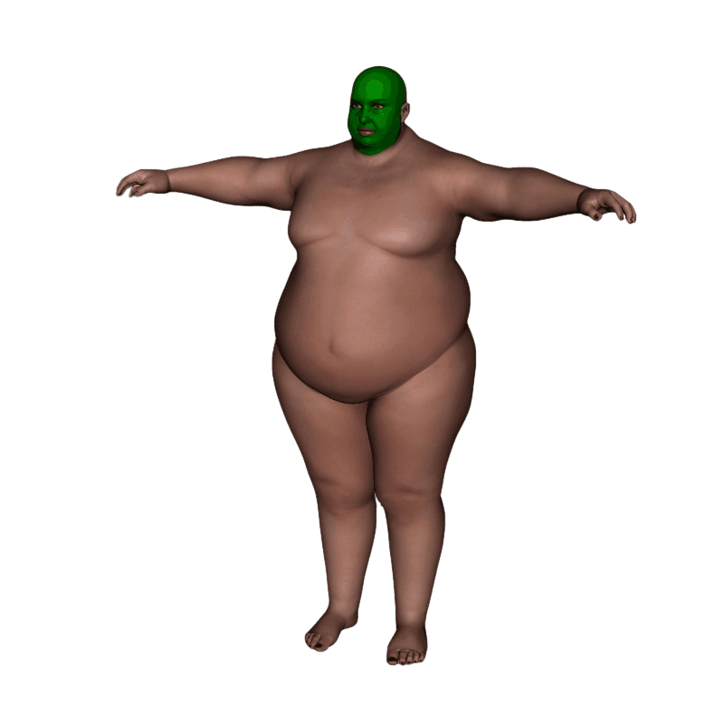

Вернуться на главную
ХРАМ ПУЗА
Цирк Живота и Жира
СЛАВА ПУЗУ СЛАВА ПУЗУ СЛАВА ПУЗУ


RJULF UYJBNCZ XTHDM D GTHDJPLFYYS[ KEUF[ DJCGFKTYBT PFNHFUBDFTN RF;LJUJ EHJLF?? RF;LE. NDFHM XNJ YT CNFKF HJ;FNM GEPFYF]]
СЛАВА ПУЗУ СЛАВА ПУЗУ СЛАВА ПУЗУ
RJULF UYJBNCZ XTHDM D GTHDJPLFYYS[ KEUF[ DJCGFKTYBT PFNHFUBDFTN RF;LJUJ EHJLF?? RF;LE. NDFHM XNJ YT CNFKF HJ;FNM GEPFYF]]